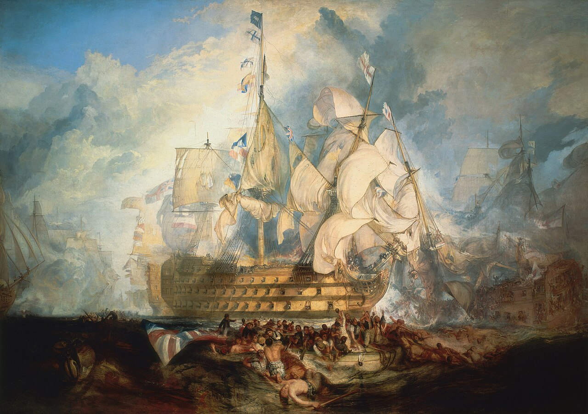
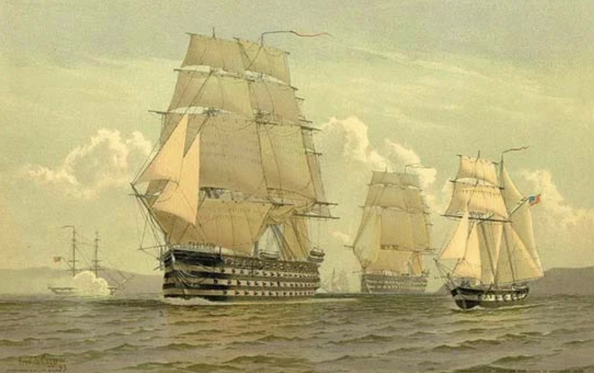
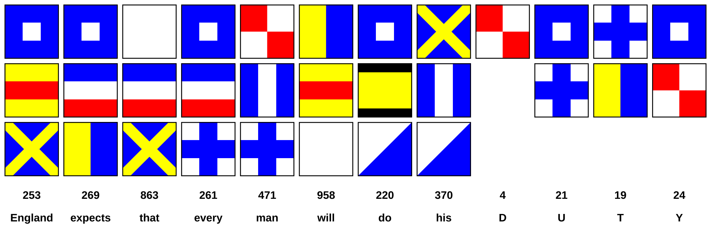
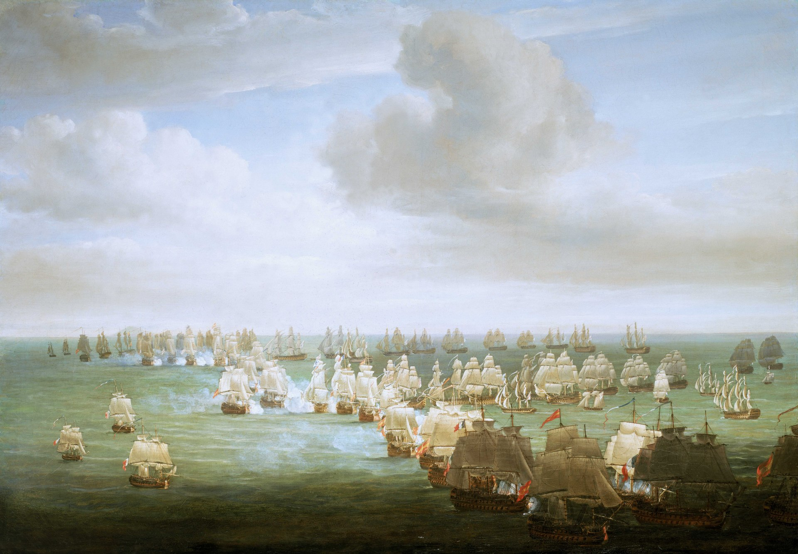
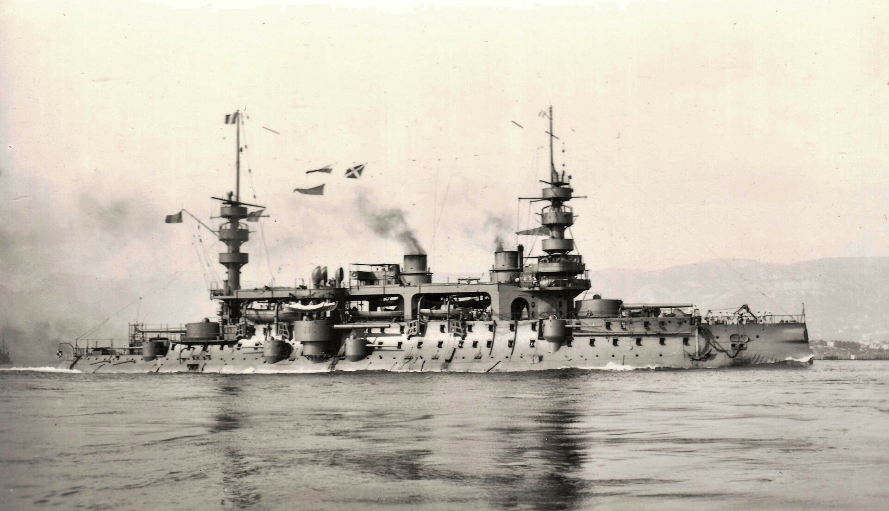
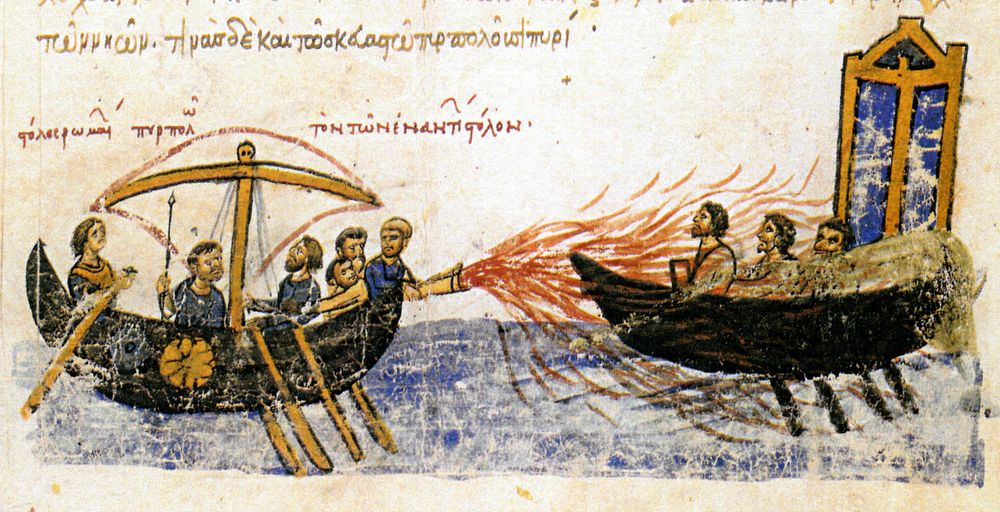
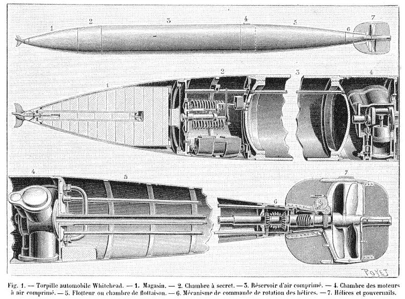
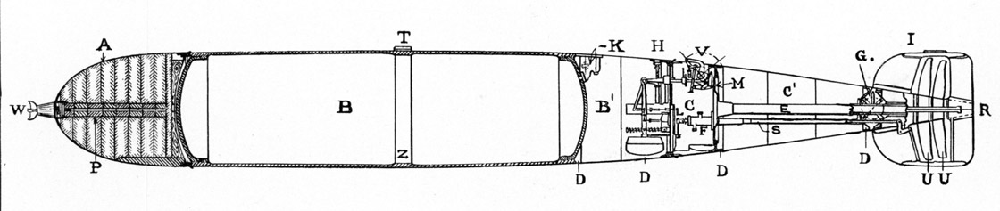
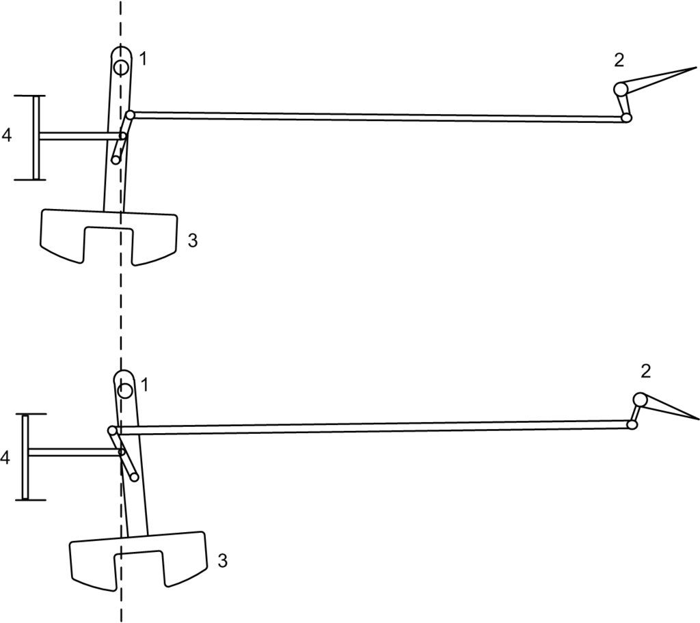

WW2 중 항모에서의 야간 작전 (3) - 전열함의 시대
게시: 2025-02-27T06:30:09+09:00
<크지 않다면 의미가 없던 시절> 원래 전통적인 유럽식 해전은 전열함(ship of the line)들끼리의 싸움. 나폴레옹 전쟁 이전부터, 최소한 2열의 포갑판에 74문 정도의 대포를 장착한 거구의 전열함들이 마치 보병 대오를 이루듯 전열을 짜고 상대 함대와 대포질을 해대다, 결국 칼과 권총 등으로 무장한 수병들이 적함에 널빤지(board)를 대고 뛰어들어 백병전을 벌이는 것으로 끝남. 이렇게 적함에 뛰어드는 전투원들을 boarding party, 즉 승선조라고 불렀음.

(트라팔가 해전에서의 넬슨의 기함 HMS Victory.) 그런데 그 시절에도 해군에는 프리깃(frigate) 함들이 있었음. 전열함들과는 달리 그냥 1열의 포갑판만 갖추고 40문 정도의 대포를 갖춘 프리깃들은 전열함보다 훨씬 작고 가벼워서 속도가 빨랐고 주로 정찰과 연락용으로 사용됨. 그런데 전열함들끼리 대오를 짜서 함대전을 벌일 때, 이런 프리깃들은 어떤 역할을 했을까? 깃발수 역할을 했음. 당시 전열함들은 보통 그냥 1줄 혹은 2줄의 종대를 만들어 해전을 벌였는데, 함대의 작전 지휘는 함대 사령관이 탄 기함(flagship)의 돛대에 신호기를 올려서 수행. 그런데 넓은 돛을 펼친 전열함들이 앞뒤로 줄을 잘 맞춰 항진하는 상태에서는 기함이 맨 앞에 있든 중간에 있든 바로 앞 뒤의 전열함에서는 그 깃발 신호를 볼 수 있을지 몰라도 더 멀리 있는 전열함들은 앞뒤 다른 배들의 돛에 가려 깃발 신호를 볼 수가 없음. 그때 프리깃함 한두 척이 전열함들의 줄 밖에 떠있다가, 기함에서 무슨 깃발을 올리건 그걸 재깍 자신의 돛대에 똑같이 올리면 함대 전체의 전열함들이 그 프리깃이 중계해주는 깃발 신호를 제대로 볼 수 있었던 것.

(이 1897년 석판화는 Frederick S. Cozzens 작품으로서, 로열네이비가 아니라 19세기 중반 미해군 전열함인 USS Pennsylvania와 USS North Carolina. 그 옆에 1열짜리 포갑판의 작은 군함이 있는데, 이건 애석하게도 frigate함이 아니라 brig함. 우리 눈에는 frigate과 brig의 차이가 보이지 않으나 당시 선원들에게는 그 차이가 분명. 가령 저 소형 군함의 마스트는 3개가 아니라 2개임.)

(트라팔가 해전에서 넬슨 제독이 올린 유명한 신호기. 이 신호 깃발을 직접 눈으로 본 당시 사람들은 의외로 적을 수 밖에 없었는데, 이유는 앞의 전열함에 가려 직접 볼 수가 없고 대신 프리깃함이 중계해주는 깃발 신호를 봐야 했기 때문.) 상황이 그렇다면 제독은 전열함에 탈 것이 아니라 차라리 그렇게 깃발 신호를 중계해주는 프리깃함에 타는 것이 더 맞는 것 아닌가? 맞음. 실제로 제독이 전열함이 아니라 그런 프리깃함에 탑승하여 지휘하는 경우도 있었으며, 트라팔가 해전에서 넬슨 제독도 프리깃함에 옮겨타서 지휘하시라고 권유 받았지만, 넬슨을 비롯한 대부분의 제독들은 그런 행위를 용기의 부족이라고 보고 거절. 전열함이 아니라 작은 프리깃에 타는 것이 모양새가 좀 빠질 수는 있지만 그게 왜 용기의 부족이 될까? 이유는 함대전이 벌어질 때 프리깃함은 아무런 공격을 받지 않았기 때문. 어떻게 생각하면 상대 함대의 지휘통제 허브(hub) 역할을 하는 프리깃함을 공격하는 것이 매우 효율적이겠으나, 신사의 시대였던 당시엔 함대전에서 상대 함대의 프리깃은 건드리지 않는다는 불문율이 있었음. 물론 이게 당시 해군 제독들이 신사들이라서 그랬던 것은 아님. 우리가 적의 프리깃함을 공격하면 적도 우리의 프리깃함을 때릴 텐데, 그러면 상호간에 제독 나으리들이 불편하셨던 것. 또한 덩치 큰 전열함들의 싸움에 있어서, 프리깃함들의 조그마한 대포들은 두꺼운 목재로 지어진 전열함의 함체를 제대로 뚤지도 못했기 때문에 별 위협이 되지 않았음. 물론 적 프리깃함이 먼저 관례를 깨고 아군을 공격하면 그 프리깃함은 공격 대상이 되었음.

(트라팔가 해전에서의 오후 1시경의 상황도. 그림 아래쪽이 프랑스-스페인 연합함대이고 위쪽이 영국 함대인데, 왼쪽에 몇 척 전열에서 따로 떨어져 나와있는 작은 배들이 바로 프리깃함들.) 서설이 길었는데, 한마디로 이야기하면 과거 해전에서 오로지 중요한 것은 전열함들이었고, 프리깃함 같은 경량급 군함들은 싸움판에 끼지도 못했음. 이건 증기 기관으로 움직이는 전노급(pre-dreadnought) 장갑 전함 시대에도 마찬가지. 두꺼운 장갑판을 입힌 전함에게 피해를 입히려면 큰 구경의 대포가 필요했는데, 그런 큰 대포를 장착하려면 군함도 커져야 했으므로, 결국 전함을 잡을 수 있는 것은 전함뿐이었던 것.

(프랑스의 전노급 전함 Charles Martel (1만2천톤, 18노트). 1893년 진수된 나름 최신예함이었으나 당시 해군 기술의 급격한 발전으로 인해 순식간에 낡은 전함이 되었고, 결국 21년만인 1914년 퇴역.) 그런데 이 모든 것을 바꿔놓는 무기가 19세기 후반에 개발됨. <비대칭 전력은 약자의 편> 옛날부터 각국 해군은 대포와 총칼 이외의 색다른 무기를 꿈꿨음. 가령 동로마 제국이 이슬람 함대를 물리친 그리스 불이라는 것도 그렇고, 영국 함대가 스페인 무적함대를 격파하는데 결정적인 역할을 한 화공선이 그런 것. 이런 특이한 무기는 언제나 약자가 원한다는 것. 전통적인 무기인 대포와 총칼은 결국 어느 쪽이 더 많은 수를 동원하느냐에 따라 승패를 결정짓는 무기인지라, 상대적인 약자측에서는 뭔가 비대칭 전력을 이용하여 의외의 승리를 거두고 싶어함.

(그리스의 불로 이슬람 함대를 무찌르는 동로마 제국 해군) 그러나 정체를 알 수 없는 그리스 불은 도중에 실전되었고, 화공선 같은 것은 효율도 떨어질 뿐만 아니라 바람의 방향 등에 따라 너무나 불안정한 무기였음. 그렇게 수천년 동안 지지부진하던 해군용 무기 발달에서 획기적인 무기가 19세기 후반에 나타남. 바로 어뢰. 영국인 엔지니어인 Robert Whitehead가 1868년 압축 공기로 자체추진하는 어뢰(torpedo)를 발명한 것. 사실 화이트헤드가 만든 어뢰는 처음부터 성공작은 아니었고, 원래 1866년 초기형 어뢰를 만들었으나 물 속에서 일정한 심도를 유지하지 못하고 진동이 심하여 실패. 그러나 화이트헤드는 굴하지 않고 연구를 거듭하여 2년만에 뭔가 '비밀장치'를 만들어 어뢰에 장착함으로써 일정 심도 유지에 성공하며 세계 최초의 자체추진 어뢰 개발에 성공.
 
(화이트헤드가 만든 어뢰의 구조. 이 구조는 기본적으로 WW2 종전 때까지 거의 그대로 사용됨)

(화이트헤드의 '비밀장치'는 결국 진자와 수압계 제어 장치 (Pendulum-and-hydrostat control). 원래는 수압계로 수심을 측정하여, 사전에 정해진 수심을 벗어나면 수압계에 연결된 축에 의해 수평타를 조절하여 일정 수심을 유지하는 장치를 사용했으나, 이럴 경우 위아래로의 진동이 너무 심하여 안정적인 심도 유지가 불가능했음. 화이트헤드는 고심 끝에 결국 진자를 추가하여 그 문제를 해결. 즉, 측정된 수심이 정해진 기준치에서 얼마나 벗어나 있느냐도 감안하여 수평타를 조절하지만 거기서 그치지 않고, 얼마나 급격하게 그 기준치에서 벗어나는지를 진자를 통해 제어함으로써 안정화에 성공.) 이렇게 개발된 어뢰는 처음에는 일반 순양함 등에서 발사하는 '회심의 한 방' 정도로 간주되었는데, 각국 해군에서는 처음부터 이 물건을 주목하지는 않았고 그냥 괴짜 발명가들이 만든 희한한 구경거리로만 간주되었음. 대포에 비해 사거리도 너무 짧고 또 대포알에 비하면 어뢰는 너무 느렸기 때문. 1877년 화이트헤드 어뢰의 속도는 불과 16노트에도 미치지 못했음. 어떤 바보가 헤엄쳐 오는 것이 눈에 뻔히 보이는 어뢰에 얻어 맞겠나? 그러나 불과 10년도 안 된 1876년, 영국 해군에게 이 어뢰가 공포의 대상으로 다가오게 됨.